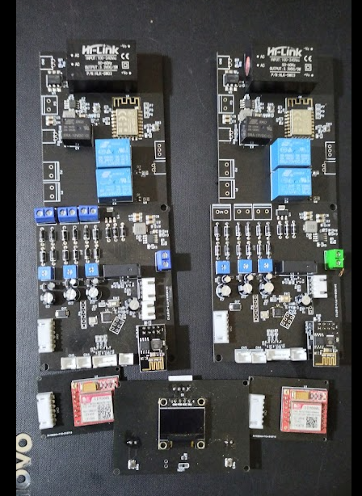
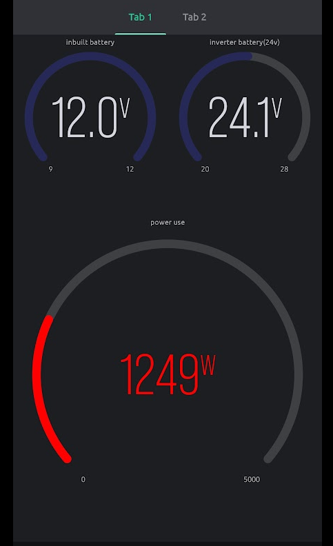

The LightBox Project
A multi-node intelligent power changeover system that manages mains, inverter, and generator sources with automatic fault detection, remote generator auto-start, and real-time cloud monitoring via a React Native mobile app.
Technical Specs

System Architecture
LightBox uses a multi-node, multi-MCU architecture with three physically separate hardware nodes communicating wirelessly. The main changeover controller (Arduino Mega 2560) serves as the central brain - reading AC voltages from all three power sources, measuring current draw via a CT clamp, controlling MOSFET-driven relay switching, and publishing telemetry over GPRS.
An ESP8266 bridge module connects to the Mega via Serial2 at 9600 baud and translates commands into ESP-NOW packets for the third node - a remote generator starter controller (also ESP8266) that physically operates the generator using a servo motor for choke control and two relays for ignition and starter motor cranking.
Power Source Management
Three analog channels (A0, A1, A7) read stepped-down AC voltage through resistive dividers, with calibration factors mapping ADC values to real voltage (e.g., AcVolt = (ADC * 4.9/1023) * 93.67). Sources are considered available above 140V, with a 130V–255V safe operating range. Current is measured on pin A6 using a CT clamp through EmonLib (emon1.calcIrms(1480) - 1480 samples per reading), with wattage calculated as Irms * AcVoltage.
Relay switching uses break-before-make logic - all sources are deactivated with a 200ms delay before activating the new one, preventing dangerous cross-connection between power sources.

Generator Auto-Start
When no sources are available in Auto Mode, the system commands the remote generator node to start. The start sequence moves a servo to 120° (engage choke), activates the ignition relay, pulses the starter motor for 2–3 seconds, then disengages the choke and checks for AC presence on GPIO12. Up to 4 retry attempts are made with alternating choke positions and crank durations.
Fault Detection & Safety
The system continuously monitors for over-voltage (>255V), under-voltage (<130V), and overload (>16kW). Faulty sources are automatically isolated and the system switches to alternates. An audible buzzer alarm triggers on fault conditions. Battery voltage is monitored on both nodes - the changeover unit saves its operating mode to EEPROM when battery drops below 11.5V, and the generator node cuts power below 3.2V to preserve its battery.

Cloud Connectivity & Mobile App
A SIM800L GSM modem connects to GPRS (supporting Airtel and MTN Nigeria APNs) and publishes JSON telemetry to HiveMQ via MQTT. The payload includes all three source voltages, output wattage, operating mode, and battery levels. A React Native mobile app subscribes over WebSocket and provides real-time monitoring with remote control - toggling between Auto/Manual modes and selecting power sources from anywhere in the world.